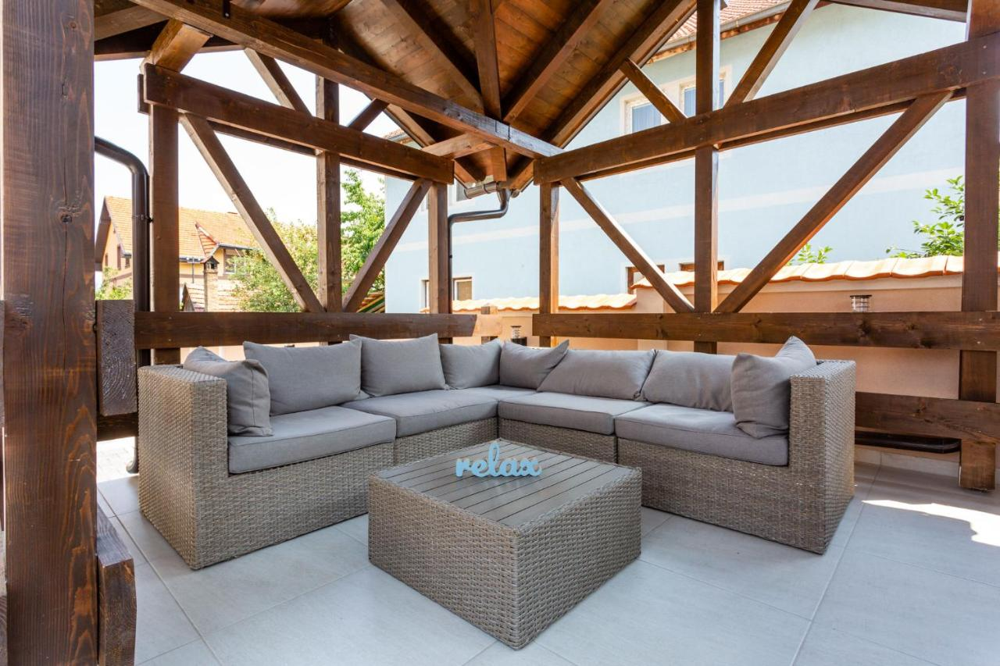

Planina Tara, odnosno Nacionalni park Tara predstavlja jednu od najzanimljivijih turističkih destinacija domaćih i stranih turista tokom leta, ali i zime. Jedan od razloga zbog kojeg se ljudi odlučuju upravo za boravak na ovom planinskom masivu jeste i veliki broj sunčanih dana i povoljni klimatski uslovi. Jasno je da se izuzev odmaranja očiju u prirodnom okruženju neverovatne lepote, možete nadisati i svežeg planinskog vazduha koji je iz više razloga pogodan po zdravlje čovekovog organizma.
